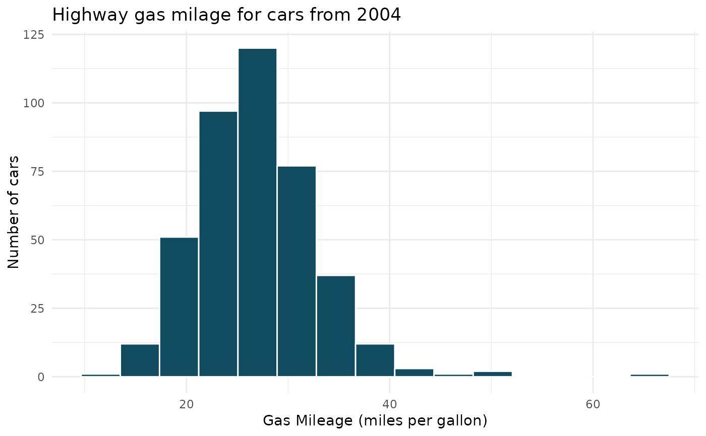

A data frame with 428 rows and 19 columns. This is a record of characteristics on all of the new models of cars for sale in the US in the year 2004.
Format
A data frame with 428 observations on the following 19 variables.
- name
The name of the vehicle including manufacturer and model.
- sports_car
Logical variable indicating if the vehicle is a sports car.
- suv
Logical variable indicating if the vehicle is an suv.
- wagon
Logical variable indicating if the vehicle is a wagon.
- minivan
Logical variable indicating if the vehicle is a minivan.
- pickup
Logical variable indicating if the vehicle is a pickup.
- all_wheel
Logical variable indicating if the vehicle is all-wheel drive.
- rear_wheel
Logical variable indicating if the vehicle is rear-wheel drive.
- msrp
Manufacturer suggested retail price of the vehicle.
- dealer_cost
Amount of money the dealer paid for the vehicle.
- eng_size
Displacement of the engine - the total volume of all the cylinders, measured in liters.
- ncyl
Number of cylinders in the engine.
- horsepwr
Amount of horsepower produced by the engine.
- city_mpg
Gas mileage for city driving, measured in miles per gallon.
- hwy_mpg
Gas mileage for highway driving, measured in miles per gallon.
- weight
Total weight of the vehicle, measured in pounds.
- wheel_base
Distance between the center of the front wheels and the center of the rear wheels, measured in inches.
- length
Total length of the vehicle, measured in inches.
- width
Total width of the vehicle, measured in inches.
Examples
library(ggplot2)
# Highway gas mileage
ggplot(cars04, aes(x = hwy_mpg)) +
geom_histogram(
bins = 15, color = "white",
fill = openintro::IMSCOL["green", "full"]
) +
theme_minimal() +
labs(
title = "Highway gas milage for cars from 2004",
x = "Gas Mileage (miles per gallon)",
y = "Number of cars"
)
#> Warning: Removed 14 rows containing non-finite outside the scale range (`stat_bin()`).
